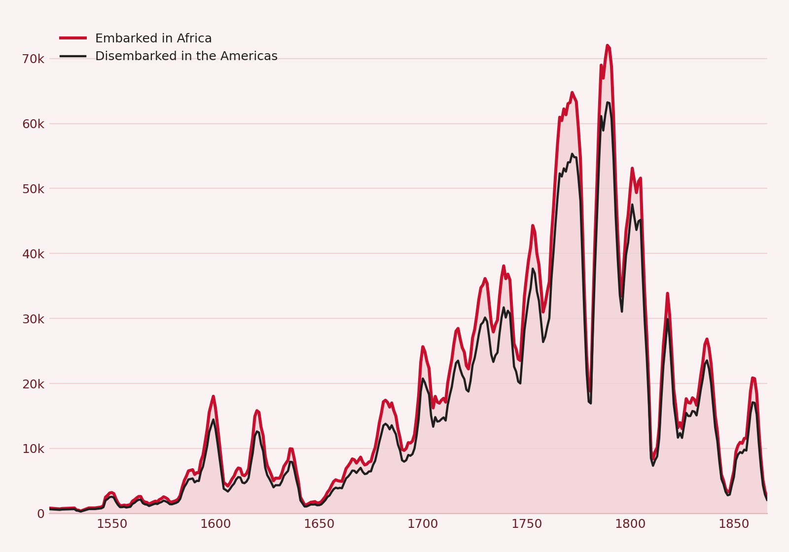
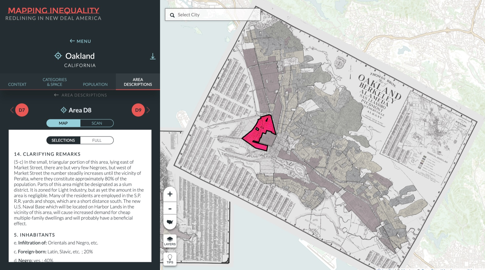

Sep 2023 – Present
Denison Men’s Varsity Swimming
NCAA swimmer in backstroke, freestyle, and IM on a nationally top-5 team. I train 20+ hours a week, and our team won the 2025 and 2026 national championships.
Data Analytics & Global Commerce · Denison ’27
I’m Luke Swiggett, a senior at Denison University. I’ve done business intelligence and consulting work for logistics, nonprofit, and public-sector clients, and I swim for a two-time NCAA championship team.
Experience
Jun – Aug 2026
Business Intelligence Intern · Columbus, OH
Jan – May 2026
Data Consultant · Data Analytics 301 Practicum, Granville, OH
Sep 2023 – Present
Project Manager, Junior Achievement of Central Ohio · Jan – May 2026
Project Manager, Village of Hebron · Sep – Nov 2025
Jun – Aug 2025
Summer Intern · San Francisco, CA
Selected work

An interactive dashboard built on more than 20,000 voyage records, comparing people embarked in Africa with those who survived to disembark, broken down by flag, region, demographics, and recorded resistance.
Explore the dashboard
An evaluation of the University of Richmond’s interactive atlas of 1930s HOLC redlining maps: its argument, its data, its design, and the audiences it serves.
Read the reviewToolkit
Cleaning, joining, and modeling large datasets.
Dashboards and reports that non-technical people can use.
Running client projects from research to recommendation.
Beyond the office
Sep 2023 – Present
NCAA swimmer in backstroke, freestyle, and IM on a nationally top-5 team. I train 20+ hours a week, and our team won the 2025 and 2026 national championships.
May 2025 – May 2026
Managed a $30,000 budget, tracked every member’s dues, and directed funds toward philanthropy events and sponsor fundraisers.
Class of 2027
B.A. in Global Commerce and Data Analytics, Granville, Ohio.
Contact
I’m looking for full-time roles in data analytics, business intelligence, and consulting starting in 2027.